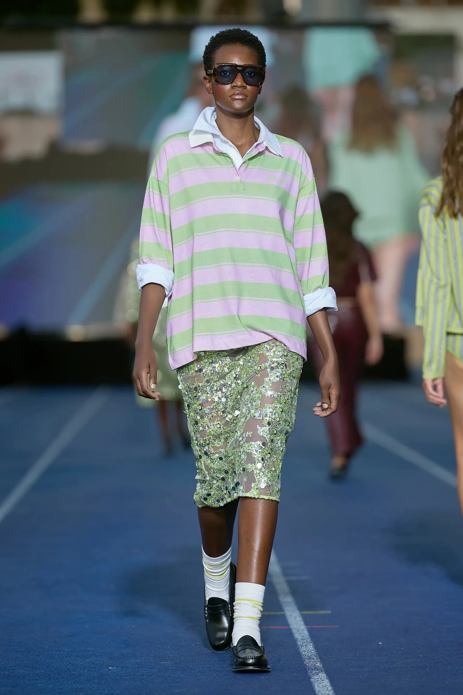
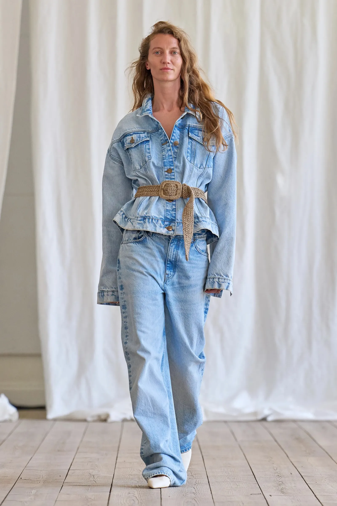

Por Teresa Romero Martínez
Copenhague se convierte en el hervidero de las tendencias y esto es lo que su semana de la moda nos cuenta de cara a la próxima primavera 2025 Copenhague es, una temporada más y sin duda alguna, el lugar donde se produce el idilio con el que sueñan las que más saben de moda. El street style nos ha deleitado con las tendencias más vanguardistas entre las que hemos visto las famosas botas de boxeo en los looks más apetecibles o el estampado de leopardo como el protagonista de todo tipo de piezas. Ha llegado el momento de desmenuzar todo lo que nos han mostrado las casas danesas más importantes en la que es considerada la semana de la moda más sostenible del mundo entero. Et voilà! Estas son de las tendencias que más veremos la próxima temporada estival.
Denim, much denim
Copenhague se convierte en el hervidero de las tendencias y esto es lo que su semana de la moda nos cuenta de cara a la próxima primavera 2025 Copenhague es, una temporada más y sin duda alguna, el lugar donde se produce el idilio con el que sueñan las que más saben de moda. El street style nos ha deleitado con las tendencias más vanguardistas entre las que hemos visto las famosas botas de boxeo en los looks más apetecibles o el estampado de leopardo como el protagonista de todo tipo de piezas. Ha llegado el momento de desmenuzar todo lo que nos han mostrado las casas danesas más importantes en la que es considerada la semana de la moda más sostenible del mundo entero. Et voilà! Estas son de las tendencias que más veremos la próxima temporada estival.
El polo en todas sus versiones

El polo en todas sus versiones En forma de vestido, de esencia tenniscore o siguiendo la más clara inclinación varsity, el polo se ha propuesto conquistar las pasarelas danesas y, ¡vaya que si lo ha conseguido! Esta es su anatomía desmenuzada según las direcciones creativas danesas.
La camiseta blanca como basico de todos los looks

La camiseta blanca según Copenhague es ni más ni menos que una garantía de éxito absoluto y, cómo no podía ser menos, también lo será la próxima primavera 2025.